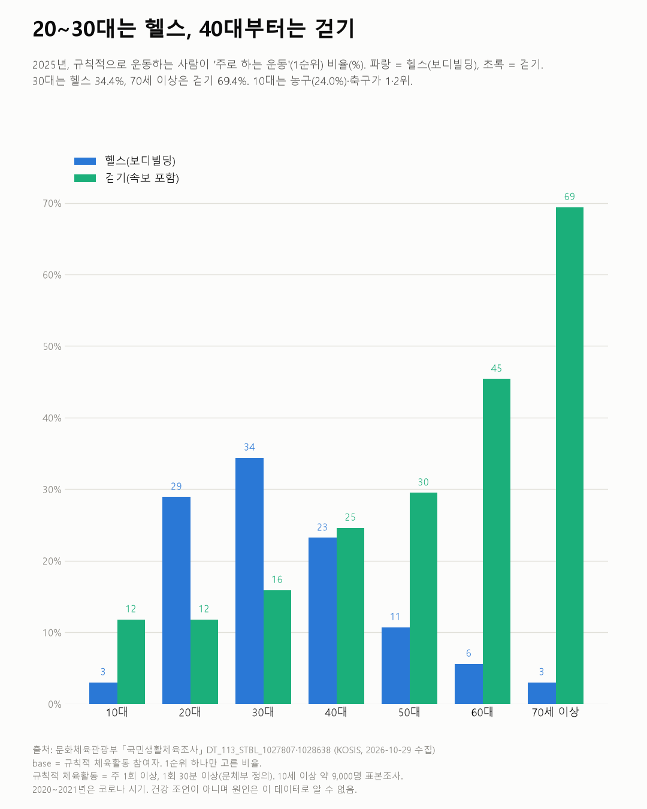

주 1회 이상 운동 62.9%, 10대만 4년 연속 줄었다
국민생활체육조사 2012~2025

질문
주 1회 이상 규칙적으로 운동하는 사람은 2012년부터 2025년까지 늘었나? 나이대·성별로 다른가? 나이대별로 주로 하는 운동은 무엇인가?
사용 데이터와 출처
| 데이터 | 출처 | 쓰임 |
|---|---|---|
| 규칙적 체육활동 참여 여부 및 빈도 (KOSIS DT_113_STBL_1027807) | 문화체육관광부 「국민생활체육조사」 | 주 1회 이상 운동 비율, 전체·성별·나이대별, 2012~2025년 |
| 주로 참여하는 체육활동(1순위, 종목 중분류) (KOSIS DT_113_STBL_1028638) | 같은 조사 | 2023~2025년 나이대별 주 종목 |
- 규칙적 체육활동 = 주 1회 이상, 1회 30분 이상(문화체육관광부 정의). 10세 이상 약 9,000명 표본조사.
- 2012년과 2016~2018년은 표에 '주1회 이상' 값이 없어 빈도별 비율(주1회~매일)을 더해 계산했다. 값이 있는 해에는 두 방법의 차이가 0.1%p 이내였다.
- 나이대별 값은 2016~2018년이 없다.
- 검증: 빈도별 비율의 합이 모든 해에 100%(±0.2)인지 확인했다.
- 교차 확인: 2025년 62.9%(2024년 60.7%), 주 2회 이상 52.2%, 10대 43.2%, 남 62.6%·여 63.3%는 문화체육관광부 2026년 1월 발표와 같다.
- 수집일: 2026-10-29 (KOSIS 오픈API).
인사이트
1. 2025년 주 1회 이상 운동하는 사람은 62.9%다. 2019년 66.6%가 가장 높았고, 2020년 60.1%로 내려온 뒤 60~63% 사이다.
2. 10대만 4년 연속 줄었다. 55.0%(2021) → 52.6% → 47.9% → 45.9% → 43.2%(2025)다. 2025년 나이대 중 가장 낮다.
3. 20~60대는 65% 안팎이다. 2025년 20대 65.2%, 30대 67.8%, 40대 67.1%, 50대 64.2%, 60대 65.8%, 70세 이상 59.5%다.
4. 주로 하는 운동은 나이에 따라 갈린다. 20대·30대는 헬스(보디빌딩)가 1위(28.9%, 34.4%)이고 요가·필라테스가 2위다. 40대부터는 걷기가 1위이며 70세 이상은 69.4%가 걷기다. 10대는 농구(24.0%)와 축구·풋살(18.1%)이 1·2위다.

한계
이 데이터로 말할 수 없는 것
- 2013→2014년 급등(45.5% → 54.8%)은 조사 방법 변화 때문일 수 있다. 이를 확인하지 못해 2014년 이전과의 비교는 조심해야 한다.
- 스스로 답한 조사다. 실제 운동량을 잰 것이 아니다.
- 10대가 줄어든 이유는 알 수 없다. 학업, 학교 체육, 다른 여가 등 무엇 때문인지 이 데이터로 가를 수 없다.
- 주 종목은 '규칙적으로 운동하는 사람' 안에서의 비율이다. 전체 인구 중 헬스를 하는 비율이 아니다.
- 표본조사다. 나이대별로 1~2%p 차이는 오차일 수 있다.
- 건강 조언이 아니다.
전제 기록
데이터를 보기 전에 적어둔 것, 그리고 보고 나서 바꾼 것
- 전제 기록(premises)(데이터를 받기 전에 작성)를 따랐다. 전제 2(급등은 방법 변화 의심)에 따라 2013→2014 급등을 한계에 적었다.
- 받은 뒤 바뀐 점: 2016~2018년 값이 비어 있어 빈도별 합으로 채우고 차트에 속이 빈 점으로 구분했다. 종목 표는 받은 뒤 추가했다(보도에서 종목 순위를 보고).